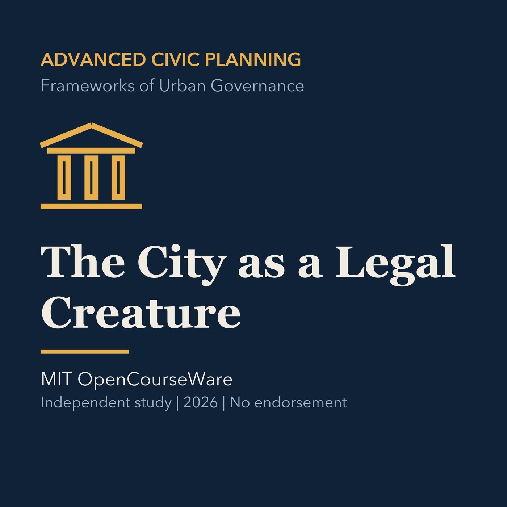

EPISODE 05
The City as a Legal Creature
Maps local authority through state law, charters, police power, and delegated planning duties.

- Stable GUID
b9f2872a-e512-59d2-a65c-9378cd3ed14a- Release
- advanced-civic-planning-v2026.3
- SHA-256
5fccb603abebf61e714ad7a05dff1894871d6f05f3c49123f2a1040ab6f15c27